2023 Advanced Higher Biology - Paper 2 questions
Source: Scottish Qualifications Authority (SQA) / Qualifications Scotland. This is a StemInteract HTML companion, not an official HTML edition. Selectable text is supplied alongside original page images. Use the images or original PDF for equations, powers, fractions, vector notation, tables and diagrams; text extraction cannot fully preserve mathematical layout.
Jump to a question
PDF page 1
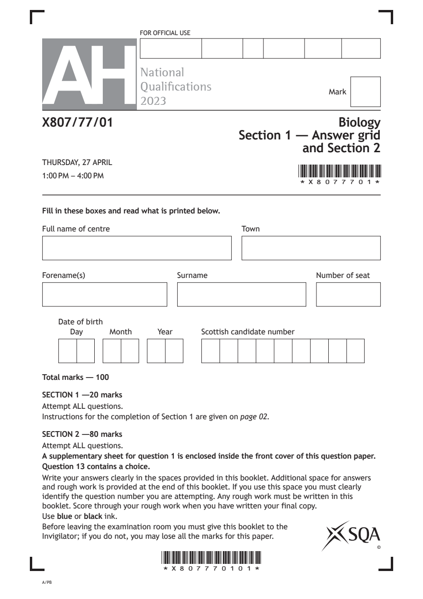
Selectable page text
FOR OFFICIAL USE
AH
National
Qualications
Mark
2023
X807/77/01 Biology
Section 1 — Answer grid
and Section 2
THURSDAY, 27 APRIL
1:00 PM – 4:00 PM
*X8077701*
Fill in these boxes and read what is printed below.
Full name of centre Town
Forename(s) Surname Number of seat
Date of birth
Day Month Year Scottish candidate number
Total marks — 100
SECTION 1 —20 marks
Attempt ALL questions.
Instructions for the completion of Section 1 are given on page 02.
SECTION 2 —80 marks
Attempt ALL questions.
A supplementary sheet for question 1 is enclosed inside the front cover of this question paper.
Question 13 contains a choice.
Write your answers clearly in the spaces provided in this booklet. Additional space for answers
and rough work is provided at the end of this booklet. If you use this space you must clearly
identify the question number you are attempting. Any rough work must be written in this
booklet. Score through your rough work when you have written your final copy.
Use blue or black ink.
Before leaving the examination room you must give this booklet to the
Invigilator; if you do not, you may lose all the marks for this paper.
©
*X807770101*
A/PBPDF page 2

Selectable page text
SECTION 1 — 20 marks
The questions for Section 1 are contained in the question paper X807/77/02.
Read these and record your answers on the answer grid on page 03 opposite.
Use blue or black ink. Do NOT use gel pens or pencil.
1. The answer to each question is either A, B, C or D. Decide what your answer is, then fill in
the appropriate bubble (see sample question below).
2. There is only one correct answer to each question.
3. Any rough working should be done on the additional space for answers and rough work at
the end of this booklet.
Sample question
The thigh bone is called the
A humerus
B femur
C tibia
D fibula.
The correct answer is B — femur. The answer B bubble has been clearly filled in (see below).
A B C D
Changing an answer
If you decide to change your answer, cancel your first answer by putting a cross through it (see
below) and fill in the answer you want. The answer below has been changed to D.
A B C D
If you then decide to change back to an answer you have already scored out, put a tick (✓) to the
right of the answer you want, as shown below:
A B C D A B C D
or
*X807770102*
page 02PDF page 3

Selectable page text
SECTION 1 — Answer grid
*OBJ20AD1*
A B C D
1
2
3
4
5
6
7
8
9
10
11
12
13
14
15
16
17
18
19
20
*X807770103*
page 03 [Turn overPDF page 4
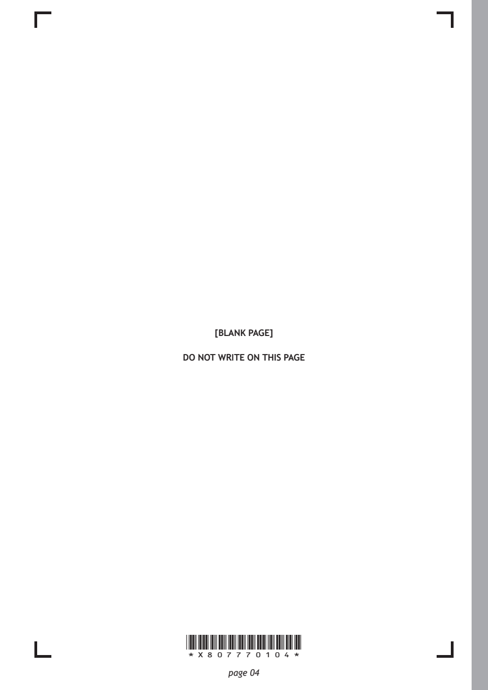
Selectable page text
[BLANK PAGE]
DO NOT WRITE ON THIS PAGE
*X807770104*
page 04PDF page 5

Selectable page text
[Turn over for next question
DO NOT WRITE ON THIS PAGE
*X807770105*
page 05PDF page 6
Paper 2, Question 1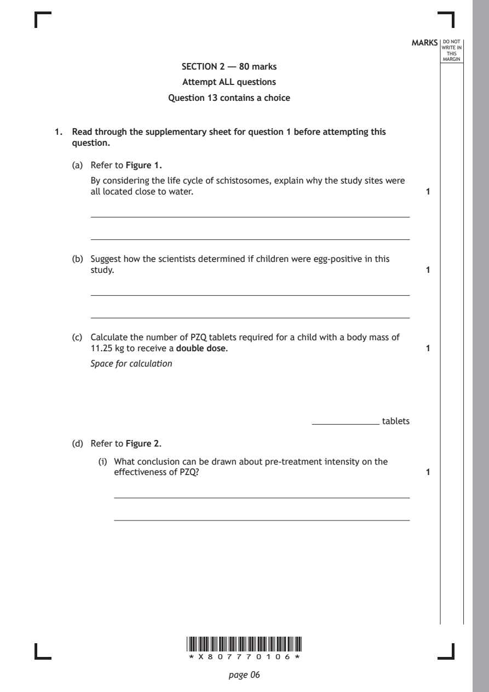
Selectable page text
MARKS _{W}^{D}_{R}^{O}_{I} _{T}^{N}OT
E IN
THIS
MARGIN
SECTION 2 — 80 marks
Attempt ALL questions
Question 13 contains a choice
1. Read through the supplementary sheet for question 1 before attempting this
question.
(a) Refer to Figure 1.
By considering the life cycle of schistosomes, explain why the study sites were
all located close to water. 1
(b) Suggest how the scientists determined if children were egg‑positive in this
study. 1
(c) Calculate the number of PZQ tablets required for a child with a body mass of
11.25 kg to receive a double dose. 1
Space for calculation
tablets
(d) Refer to Figure 2.
(i) What conclusion can be drawn about pre‑treatment intensity on the
effectiveness of PZQ? 1
*X807770106*
page 06PDF page 7
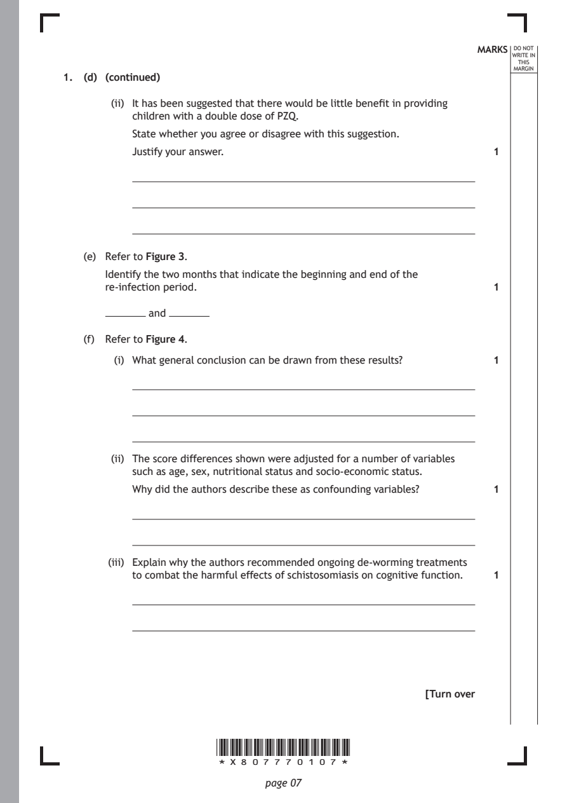
Selectable page text
MARKS _{W}^{D}_{R}^{O}_{I} _{T}^{N}OT
E IN
THIS
MARGIN
1. (d) (continued)
(ii) It has been suggested that there would be little benefit in providing
children with a double dose of PZQ.
State whether you agree or disagree with this suggestion.
Justify your answer. 1
(e) Refer to Figure 3.
Identify the two months that indicate the beginning and end of the
re‑infection period. 1
and
(f) Refer to Figure 4.
(i) What general conclusion can be drawn from these results? 1
(ii) The score differences shown were adjusted for a number of variables
such as age, sex, nutritional status and socio‑economic status.
Why did the authors describe these as confounding variables? 1
(iii) Explain why the authors recommended ongoing de‑worming treatments
to combat the harmful effects of schistosomiasis on cognitive function. 1
[Turn over
*X807770107*
page 07PDF page 8
Paper 2, Question 2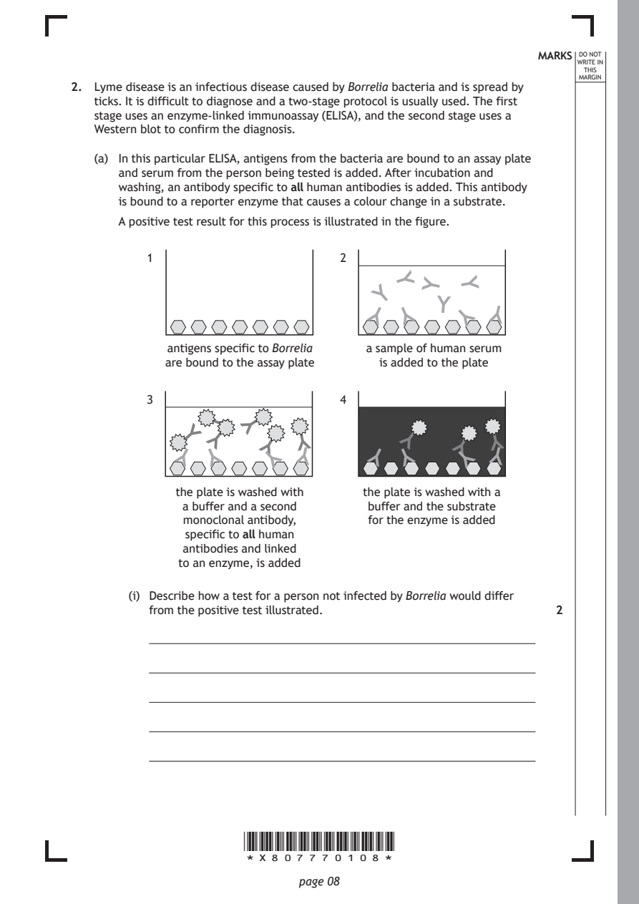
Selectable page text
MARKS _{W}^{D}_{R}^{O}_{I} _{T}^{N}OT
E IN
THIS
MARGIN
2. Lyme disease is an infectious disease caused by Borrelia bacteria and is spread by
ticks. It is difficult to diagnose and a two‑stage protocol is usually used. The first
stage uses an enzyme‑linked immunoassay (ELISA), and the second stage uses a
Western blot to confirm the diagnosis.
(a) In this particular ELISA, antigens from the bacteria are bound to an assay plate
and serum from the person being tested is added. After incubation and
washing, an antibody specific to all human antibodies is added. This antibody
is bound to a reporter enzyme that causes a colour change in a substrate.
A positive test result for this process is illustrated in the figure.
1 2
antigens specific to Borrelia a sample of human serum
are bound to the assay plate is added to the plate
3 4
the plate is washed with the plate is washed with a
a buffer and a second buffer and the substrate
monoclonal antibody, for the enzyme is added
specific to all human
antibodies and linked
to an enzyme, is added
(i) Describe how a test for a person not infected by Borrelia would differ
from the positive test illustrated. 2
*X807770108*
page 08PDF page 9
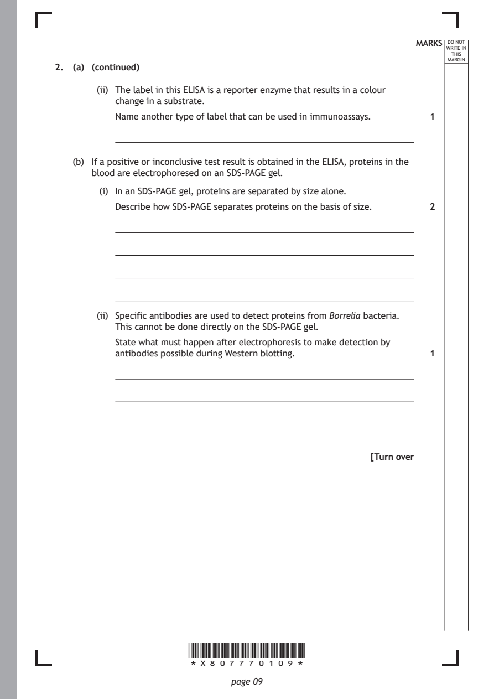
Selectable page text
MARKS _{W}^{D}_{R}^{O}_{I} _{T}^{N}OT
E IN
THIS
MARGIN
2. (a) (continued)
(ii) The label in this ELISA is a reporter enzyme that results in a colour
change in a substrate.
Name another type of label that can be used in immunoassays. 1
(b) If a positive or inconclusive test result is obtained in the ELISA, proteins in the
blood are electrophoresed on an SDS‑PAGE gel.
(i) In an SDS‑PAGE gel, proteins are separated by size alone.
Describe how SDS‑PAGE separates proteins on the basis of size. 2
(ii) Specific antibodies are used to detect proteins from Borrelia bacteria.
This cannot be done directly on the SDS‑PAGE gel.
State what must happen after electrophoresis to make detection by
antibodies possible during Western blotting. 1
[Turn over
*X807770109*
page 09PDF page 10
Paper 2, Question 3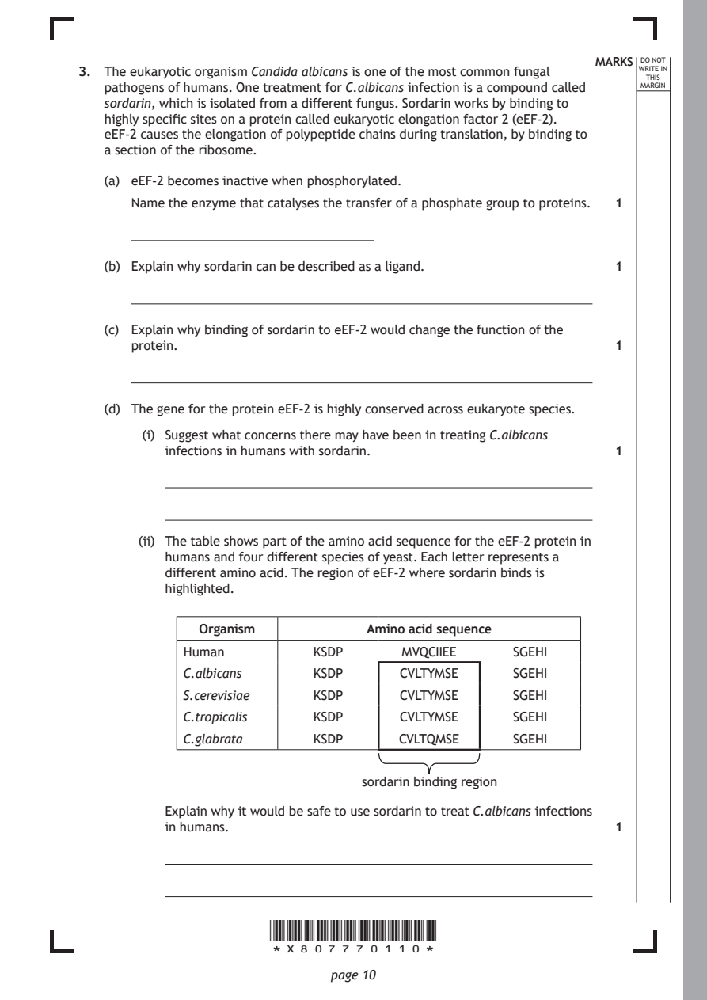
Selectable page text
MARKS _{W}^{D}_{R}^{O}_{I} _{T}^{N}OT
3. The eukaryotic organism Candida albicans is one of the most common fungal E IN
THIS
pathogens of humans. One treatment for C.albicans infection is a compound called MARGIN
sordarin, which is isolated from a different fungus. Sordarin works by binding to
highly specific sites on a protein called eukaryotic elongation factor 2 (eEF‑2).
eEF‑2 causes the elongation of polypeptide chains during translation, by binding to
a section of the ribosome.
(a) eEF‑2 becomes inactive when phosphorylated.
Name the enzyme that catalyses the transfer of a phosphate group to proteins. 1
(b) Explain why sordarin can be described as a ligand. 1
(c) Explain why binding of sordarin to eEF‑2 would change the function of the
protein. 1
(d) The gene for the protein eEF‑2 is highly conserved across eukaryote species.
(i) Suggest what concerns there may have been in treating C.albicans
infections in humans with sordarin. 1
(ii) The table shows part of the amino acid sequence for the eEF‑2 protein in
humans and four different species of yeast. Each letter represents a
different amino acid. The region of eEF‑2 where sordarin binds is
highlighted.
Organism Amino acid sequence
Human KSDP MVQCIIEE SGEHI
C.albicans KSDP CVLTYMSE SGEHI
S.cerevisiae KSDP CVLTYMSE SGEHI
C.tropicalis KSDP CVLTYMSE SGEHI
C.glabrata KSDP CVLTQMSE SGEHI
sordarin binding region
Explain why it would be safe to use sordarin to treat C.albicans infections
in humans. 1
*X807770110*
page 10PDF page 11
Paper 2, Question 4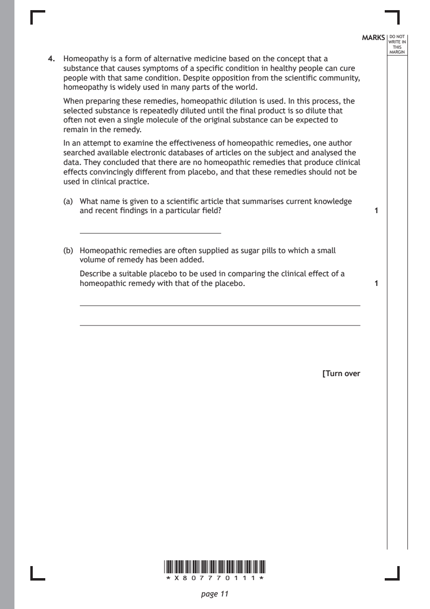
Selectable page text
MARKS _{W}^{D}_{R}^{O}_{I} _{T}^{N}OT
E IN
THIS
MARGIN
4. Homeopathy is a form of alternative medicine based on the concept that a
substance that causes symptoms of a specific condition in healthy people can cure
people with that same condition. Despite opposition from the scientific community,
homeopathy is widely used in many parts of the world.
When preparing these remedies, homeopathic dilution is used. In this process, the
selected substance is repeatedly diluted until the final product is so dilute that
often not even a single molecule of the original substance can be expected to
remain in the remedy.
In an attempt to examine the effectiveness of homeopathic remedies, one author
searched available electronic databases of articles on the subject and analysed the
data. They concluded that there are no homeopathic remedies that produce clinical
effects convincingly different from placebo, and that these remedies should not be
used in clinical practice.
(a) What name is given to a scientific article that summarises current knowledge
and recent findings in a particular field? 1
(b) Homeopathic remedies are often supplied as sugar pills to which a small
volume of remedy has been added.
Describe a suitable placebo to be used in comparing the clinical effect of a
homeopathic remedy with that of the placebo. 1
[Turn over
*X807770111*
page 11PDF page 12
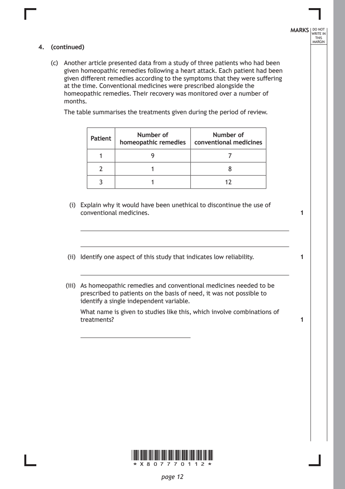
Selectable page text
MARKS _{W}^{D}_{R}^{O}_{I} _{T}^{N}OT
E IN
THIS
MARGIN
4. (continued)
(c) Another article presented data from a study of three patients who had been
given homeopathic remedies following a heart attack. Each patient had been
given different remedies according to the symptoms that they were suffering
at the time. Conventional medicines were prescribed alongside the
homeopathic remedies. Their recovery was monitored over a number of
months.
The table summarises the treatments given during the period of review.
Number of Number of
Patient
homeopathic remedies conventional medicines
1 9 7
2 1 8
3 1 12
(i) Explain why it would have been unethical to discontinue the use of
conventional medicines. 1
(ii) Identify one aspect of this study that indicates low reliability. 1
(iii) As homeopathic remedies and conventional medicines needed to be
prescribed to patients on the basis of need, it was not possible to
identify a single independent variable.
What name is given to studies like this, which involve combinations of
treatments? 1
*X807770112*
page 12PDF page 13
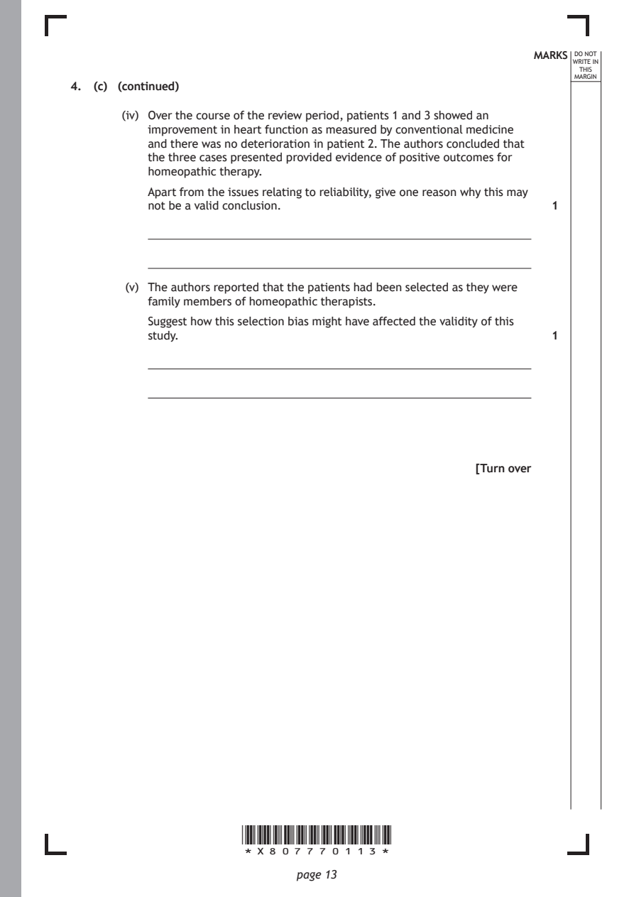
Selectable page text
MARKS _{W}^{D}_{R}^{O}_{I} _{T}^{N}OT
E IN
THIS
MARGIN
4. (c) (continued)
(iv) Over the course of the review period, patients 1 and 3 showed an
improvement in heart function as measured by conventional medicine
and there was no deterioration in patient 2. The authors concluded that
the three cases presented provided evidence of positive outcomes for
homeopathic therapy.
Apart from the issues relating to reliability, give one reason why this may
not be a valid conclusion. 1
(v) The authors reported that the patients had been selected as they were
family members of homeopathic therapists.
Suggest how this selection bias might have affected the validity of this
study. 1
[Turn over
*X807770113*
page 13PDF page 14
Paper 2, Question 5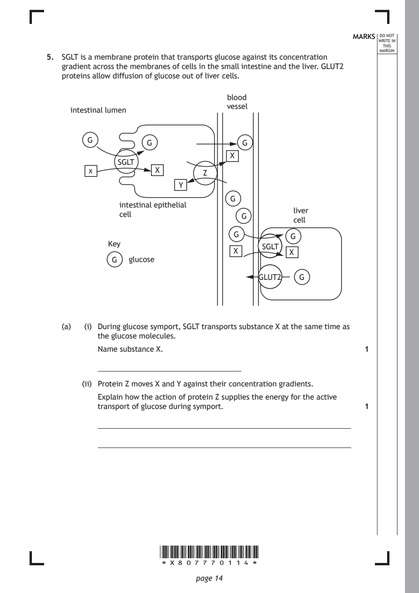
Selectable page text
MARKS _{W}^{D}_{R}^{O}_{I} _{T}^{N}OT
E IN
THIS
MARGIN
5. SGLT is a membrane protein that transports glucose against its concentration
gradient across the membranes of cells in the small intestine and the liver. GLUT2
proteins allow diffusion of glucose out of liver cells.
blood
vessel
intestinal lumen
G
G G
X
SGLT
x X
Z
Y
G
intestinal epithelial
liver
cell G
cell
G
G
Key
SGLT
X X
G glucose
GLUT2 G
(a) (i) During glucose symport, SGLT transports substance X at the same time as
the glucose molecules.
Name substance X. 1
(ii) Protein Z moves X and Y against their concentration gradients.
Explain how the action of protein Z supplies the energy for the active
transport of glucose during symport. 1
*X807770114*
page 14PDF page 15
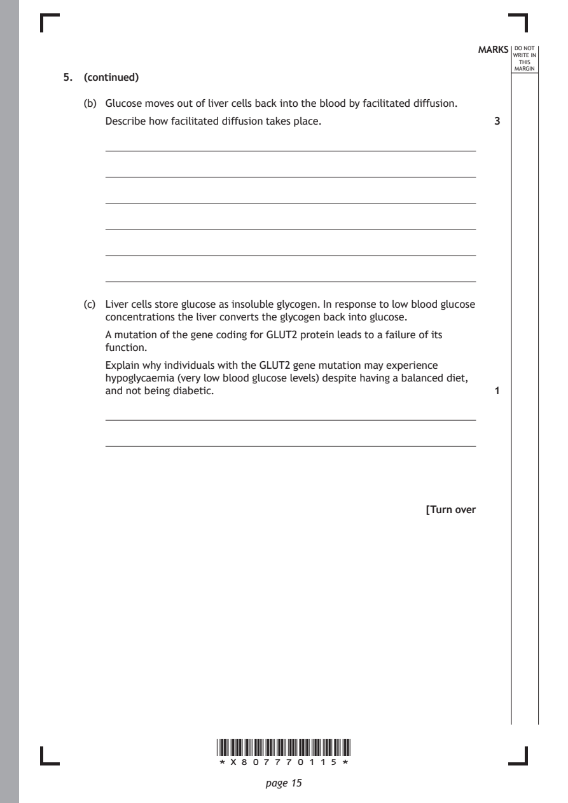
Selectable page text
MARKS _{W}^{D}_{R}^{O}_{I} _{T}^{N}OT
E IN
THIS
MARGIN
5. (continued)
(b) Glucose moves out of liver cells back into the blood by facilitated diffusion.
Describe how facilitated diffusion takes place. 3
(c) Liver cells store glucose as insoluble glycogen. In response to low blood glucose
concentrations the liver converts the glycogen back into glucose.
A mutation of the gene coding for GLUT2 protein leads to a failure of its
function.
Explain why individuals with the GLUT2 gene mutation may experience
hypoglycaemia (very low blood glucose levels) despite having a balanced diet,
and not being diabetic. 1
[Turn over
*X807770115*
page 15PDF page 16
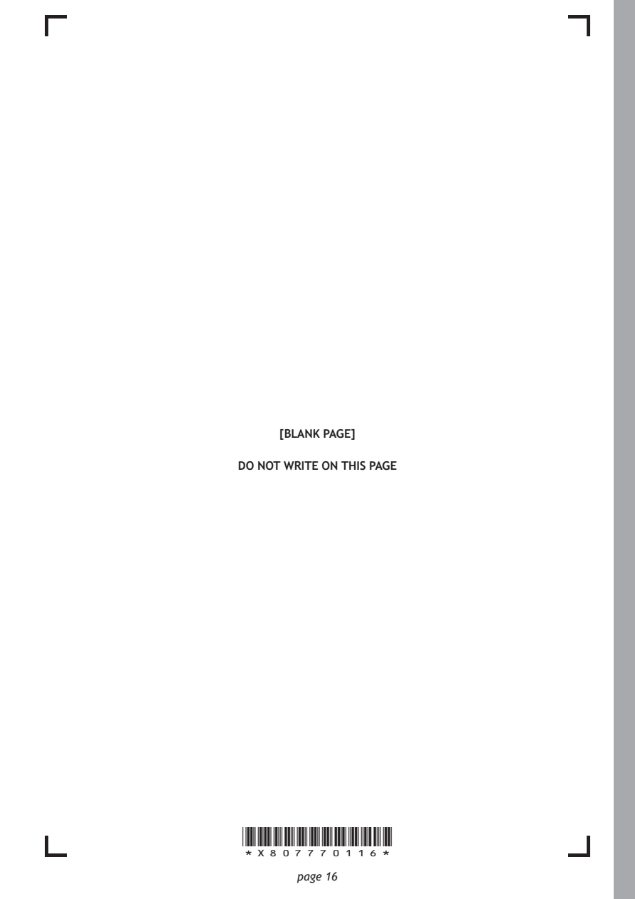
Selectable page text
[BLANK PAGE]
DO NOT WRITE ON THIS PAGE
*X807770116*
page 16PDF page 17
Paper 2, Question 6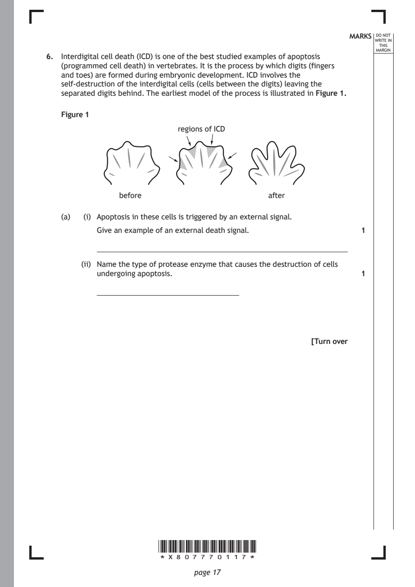
Selectable page text
MARKS _{W}^{D}_{R}^{O}_{I} _{T}^{N}OT
E IN
THIS
MARGIN
6. Interdigital cell death (ICD) is one of the best studied examples of apoptosis
(programmed cell death) in vertebrates. It is the process by which digits (fingers
and toes) are formed during embryonic development. ICD involves the
self‑destruction of the interdigital cells (cells between the digits) leaving the
separated digits behind. The earliest model of the process is illustrated in Figure 1.
Figure 1
regions of ICD
before after
(a) (i) Apoptosis in these cells is triggered by an external signal.
Give an example of an external death signal. 1
(ii) Name the type of protease enzyme that causes the destruction of cells
undergoing apoptosis. 1
[Turn over
*X807770117*
page 17PDF page 18
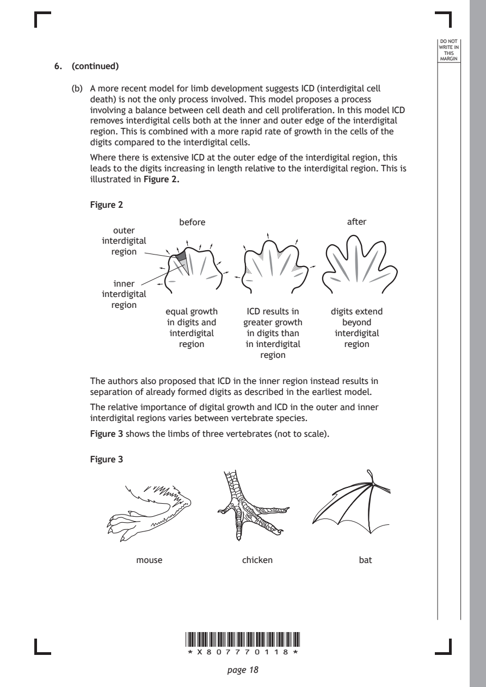
Selectable page text
DO NOT
WRITE IN
THIS
MARGIN
6. (continued)
(b) A more recent model for limb development suggests ICD (interdigital cell
death) is not the only process involved. This model proposes a process
involving a balance between cell death and cell proliferation. In this model ICD
removes interdigital cells both at the inner and outer edge of the interdigital
region. This is combined with a more rapid rate of growth in the cells of the
digits compared to the interdigital cells.
Where there is extensive ICD at the outer edge of the interdigital region, this
leads to the digits increasing in length relative to the interdigital region. This is
illustrated in Figure 2.
Figure 2
before after
outer
interdigital
region
inner
interdigital
region
equal growth ICD results in digits extend
in digits and greater growth beyond
interdigital in digits than interdigital
region in interdigital region
region
The authors also proposed that ICD in the inner region instead results in
separation of already formed digits as described in the earliest model.
The relative importance of digital growth and ICD in the outer and inner
interdigital regions varies between vertebrate species.
Figure 3 shows the limbs of three vertebrates (not to scale).
Figure 3
mouse chicken bat
*X807770118*
page 18PDF page 19
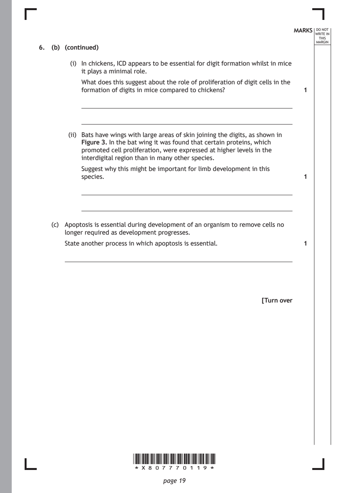
Selectable page text
MARKS _{W}^{D}_{R}^{O}_{I} _{T}^{N}OT
E IN
THIS
MARGIN
6. (b) (continued)
(i) In chickens, ICD appears to be essential for digit formation whilst in mice
it plays a minimal role.
What does this suggest about the role of proliferation of digit cells in the
formation of digits in mice compared to chickens? 1
(ii) Bats have wings with large areas of skin joining the digits, as shown in
Figure 3. In the bat wing it was found that certain proteins, which
promoted cell proliferation, were expressed at higher levels in the
interdigital region than in many other species.
Suggest why this might be important for limb development in this
species. 1
(c) Apoptosis is essential during development of an organism to remove cells no
longer required as development progresses.
State another process in which apoptosis is essential. 1
[Turn over
*X807770119*
page 19PDF page 20
Paper 2, Question 7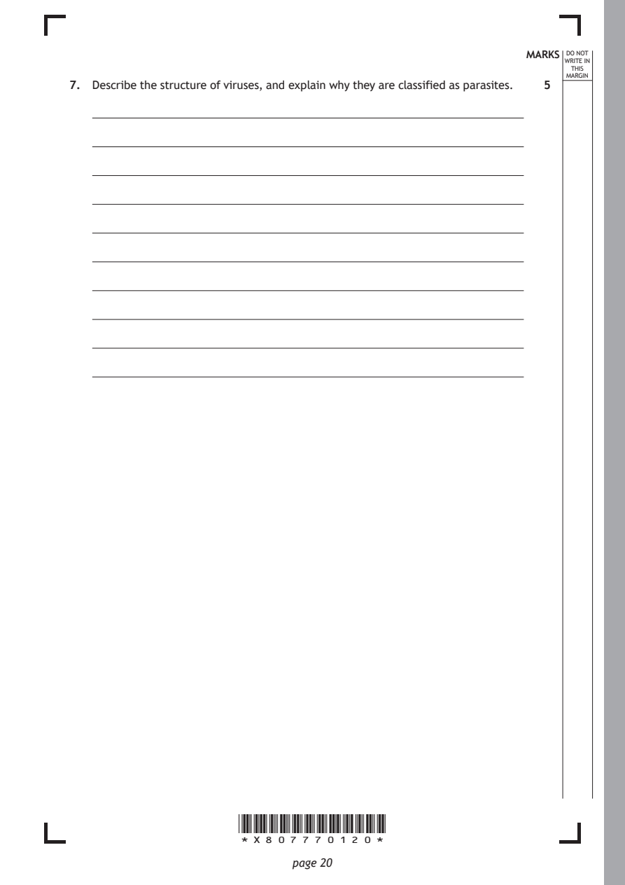
Selectable page text
MARKS _{W}^{D}_{R}^{O}_{I} _{T}^{N}OT
E IN
THIS
ARGIN
7. Describe the structure of viruses, and explain why they are classified as parasites. 5 ^{M}
*X807770120*
page 20PDF page 21
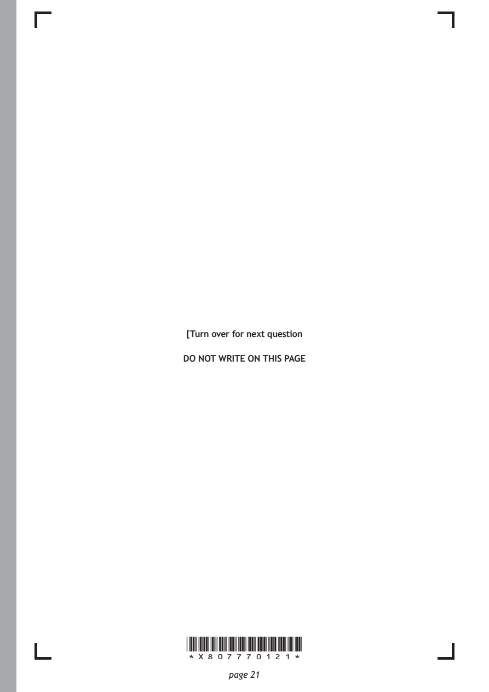
Selectable page text
[Turn over for next question
DO NOT WRITE ON THIS PAGE
*X807770121*
page 21PDF page 22
Paper 2, Question 8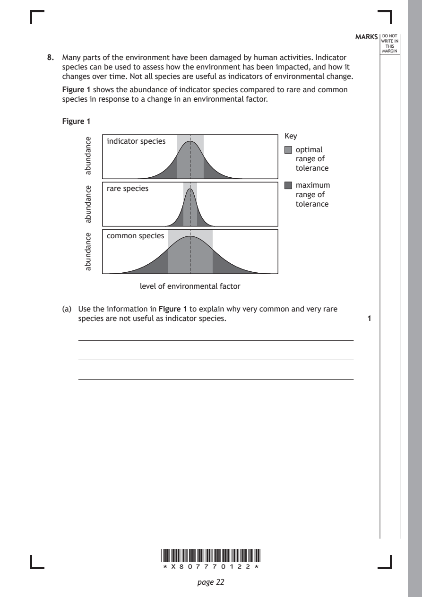
Selectable page text
MARKS _{W}^{D}_{R}^{O}_{I} _{T}^{N}OT
E IN
THIS
MARGIN
8. Many parts of the environment have been damaged by human activities. Indicator
species can be used to assess how the environment has been impacted, and how it
changes over time. Not all species are useful as indicators of environmental change.
Figure 1 shows the abundance of indicator species compared to rare and common
species in response to a change in an environmental factor.
Figure 1
Key
indicator species
optimal
range of
tolerance
maximum
rare species
range of
tolerance
common species
level of environmental factor
*X807770122*
page 22
ecnadnuba
ecnadnuba
ecnadnuba
(a) Use the information in Figure 1 to explain why very common and very rare
species are not useful as indicator species. 1PDF page 23
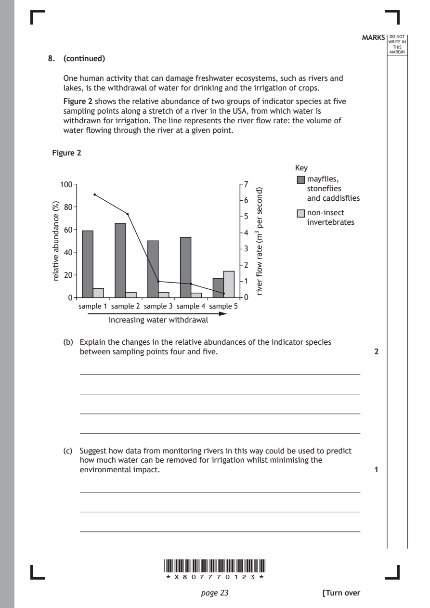
Selectable page text
MARKS _{W}^{D}_{R}^{O}_{I} _{T}^{N}OT
E IN
THIS
MARGIN
8. (continued)
One human activity that can damage freshwater ecosystems, such as rivers and
lakes, is the withdrawal of water for drinking and the irrigation of crops.
Figure 2 shows the relative abundance of two groups of indicator species at five
sampling points along a stretch of a river in the USA, from which water is
withdrawn for irrigation. The line represents the river flow rate: the volume of
water flowing through the river at a given point.
Figure 2
Key
mayflies,
stoneflies
and caddisflies
non‑insect
invertebrates
increasing water withdrawal
*X807770123*
page 23
)%(
ecnadnuba
evitaler
)dnoces
rep
3m(
etar
wolf
revir
100 7
6
80
5
60
4
3
40
2
20
1
0 0
sample 1 sample 2 sample 3 sample 4 sample 5
(b) Explain the changes in the relative abundances of the indicator species
between sampling points four and five. 2
(c) Suggest how data from monitoring rivers in this way could be used to predict
how much water can be removed for irrigation whilst minimising the
environmental impact. 1
[Turn overPDF page 24
Paper 2, Question 9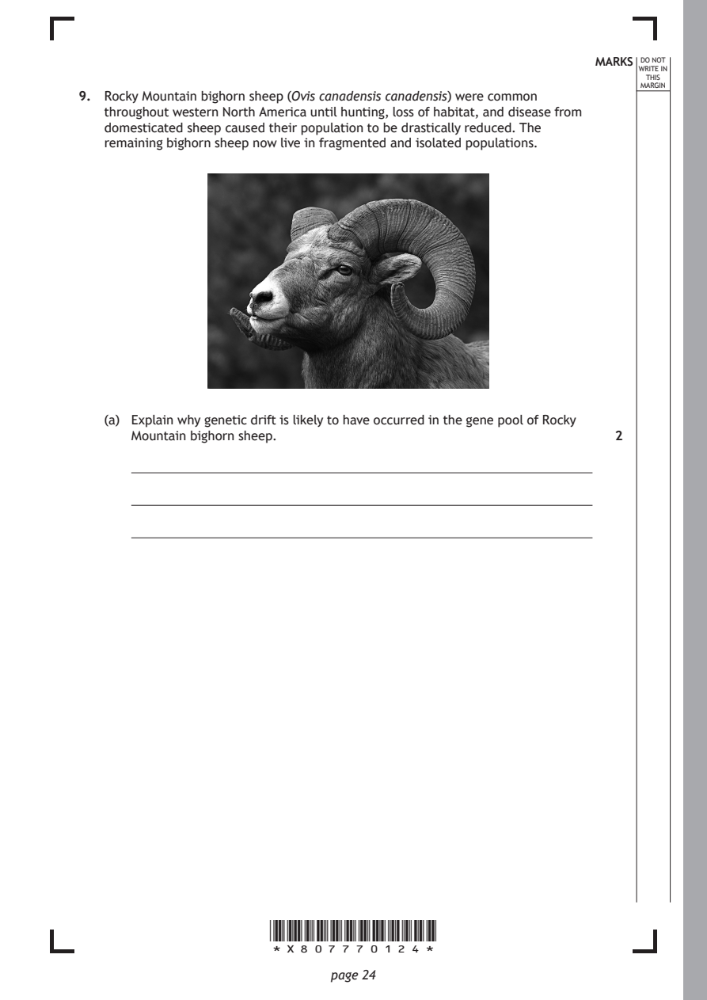
Selectable page text
MARKS _{W}^{D}_{R}^{O}_{I} _{T}^{N}OT
E IN
THIS
MARGIN
9. Rocky Mountain bighorn sheep (Ovis canadensis canadensis) were common
throughout western North America until hunting, loss of habitat, and disease from
domesticated sheep caused their population to be drastically reduced. The
remaining bighorn sheep now live in fragmented and isolated populations.
(a) Explain why genetic drift is likely to have occurred in the gene pool of Rocky
Mountain bighorn sheep. 2
*X807770124*
page 24PDF page 25
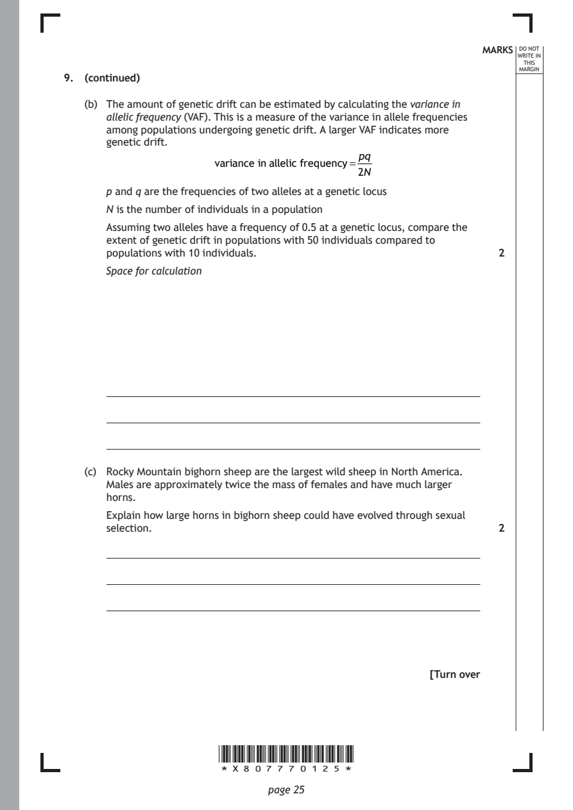
Selectable page text
MARKS _{W}^{D}_{R}^{O}_{I} _{T}^{N}OT
E IN
THIS
MARGIN
9. (continued)
(b) The amount of genetic drift can be estimated by calculating the variance in
allelic frequency (VAF). This is a measure of the variance in allele frequencies
among populations undergoing genetic drift. A larger VAF indicates more
genetic drift.
pq
variance inallelic frequency=
2N
p and q are the frequencies of two alleles at a genetic locus
N is the number of individuals in a population
Assuming two alleles have a frequency of 0.5 at a genetic locus, compare the
extent of genetic drift in populations with 50 individuals compared to
populations with 10 individuals. 2
Space for calculation
(c) Rocky Mountain bighorn sheep are the largest wild sheep in North America.
Males are approximately twice the mass of females and have much larger
horns.
Explain how large horns in bighorn sheep could have evolved through sexual
selection. 2
[Turn over
*X807770125*
page 25PDF page 26
Paper 2, Question 10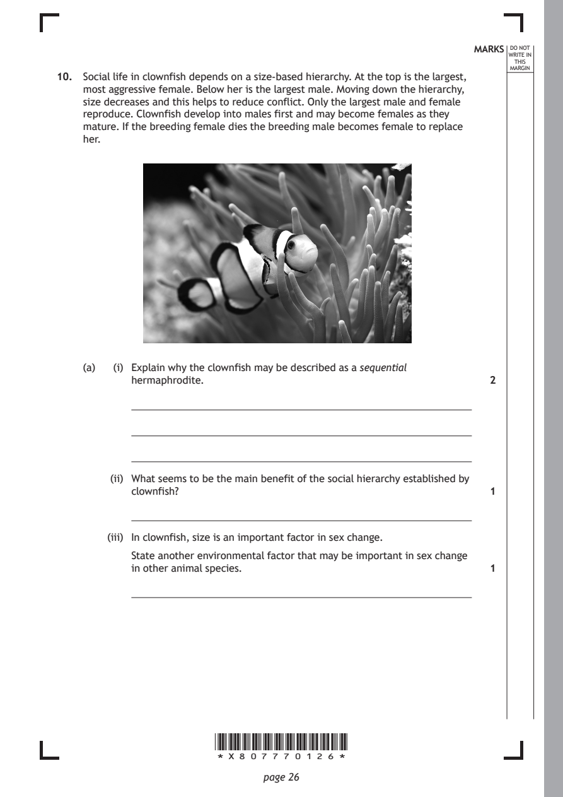
Selectable page text
MARKS _{W}^{D}_{R}^{O}_{I} _{T}^{N}OT
E IN
THIS
MARGIN
10. Social life in clownfish depends on a size‑based hierarchy. At the top is the largest,
most aggressive female. Below her is the largest male. Moving down the hierarchy,
size decreases and this helps to reduce conflict. Only the largest male and female
reproduce. Clownfish develop into males first and may become females as they
mature. If the breeding female dies the breeding male becomes female to replace
her.
(a) (i) Explain why the clownfish may be described as a sequential
hermaphrodite. 2
(ii) What seems to be the main benefit of the social hierarchy established by
clownfish? 1
(iii) In clownfish, size is an important factor in sex change.
State another environmental factor that may be important in sex change
in other animal species. 1
*X807770126*
page 26PDF page 27
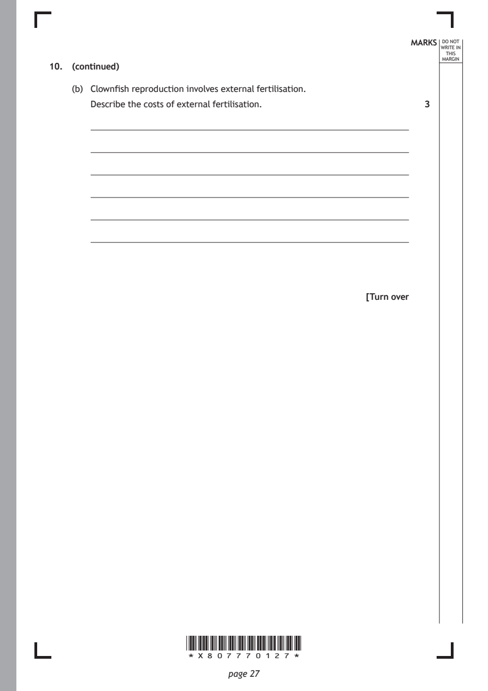
Selectable page text
MARKS _{W}^{D}_{R}^{O}_{I} _{T}^{N}OT
E IN
THIS
MARGIN
10. (continued)
(b) Clownfish reproduction involves external fertilisation.
Describe the costs of external fertilisation. 3
[Turn over
*X807770127*
page 27PDF page 28
Paper 2, Question 11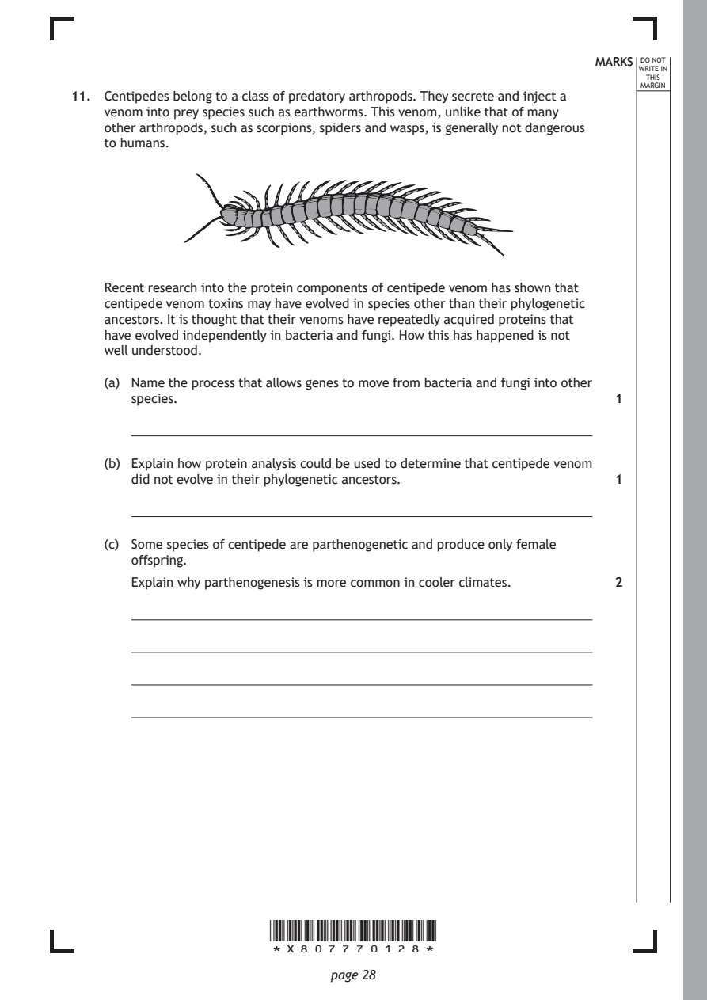
Selectable page text
MARKS _{W}^{D}_{R}^{O}_{I} _{T}^{N}OT
E IN
THIS
MARGIN
11. Centipedes belong to a class of predatory arthropods. They secrete and inject a
venom into prey species such as earthworms. This venom, unlike that of many
other arthropods, such as scorpions, spiders and wasps, is generally not dangerous
to humans.
Recent research into the protein components of centipede venom has shown that
centipede venom toxins may have evolved in species other than their phylogenetic
ancestors. It is thought that their venoms have repeatedly acquired proteins that
have evolved independently in bacteria and fungi. How this has happened is not
well understood.
(a) Name the process that allows genes to move from bacteria and fungi into other
species. 1
(b) Explain how protein analysis could be used to determine that centipede venom
did not evolve in their phylogenetic ancestors. 1
(c) Some species of centipede are parthenogenetic and produce only female
offspring.
Explain why parthenogenesis is more common in cooler climates. 2
*X807770128*
page 28PDF page 29
Paper 2, Question 12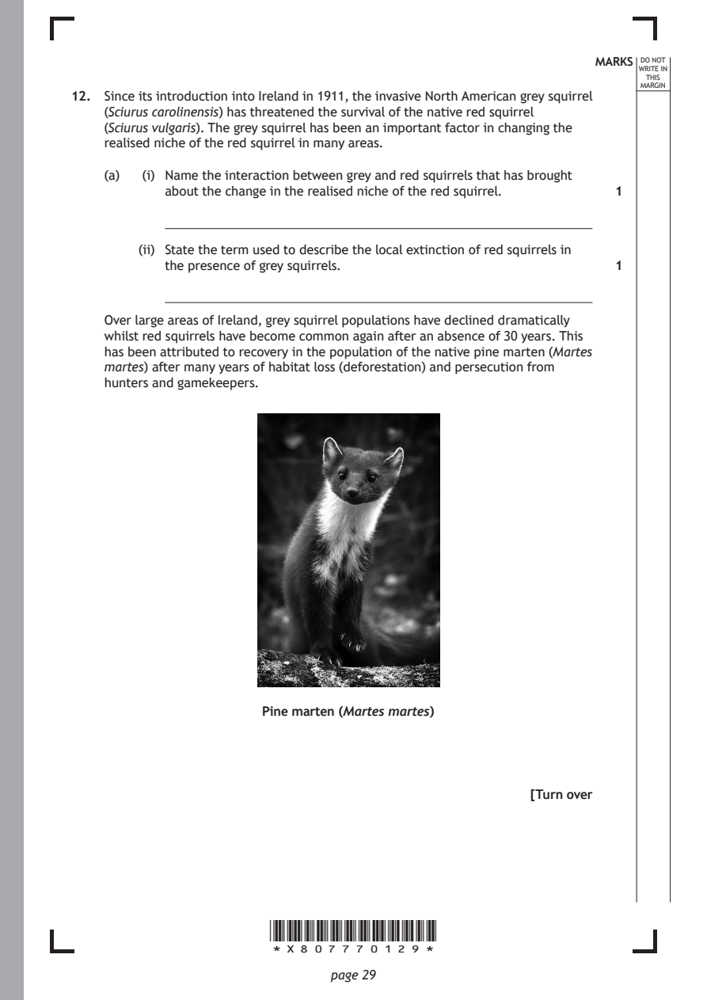
Selectable page text
MARKS _{W}^{D}_{R}^{O}_{I} _{T}^{N}OT
E IN
THIS
MARGIN
12. Since its introduction into Ireland in 1911, the invasive North American grey squirrel
(Sciurus carolinensis) has threatened the survival of the native red squirrel
(Sciurus vulgaris). The grey squirrel has been an important factor in changing the
realised niche of the red squirrel in many areas.
(a) (i) Name the interaction between grey and red squirrels that has brought
about the change in the realised niche of the red squirrel. 1
(ii) State the term used to describe the local extinction of red squirrels in
the presence of grey squirrels. 1
Over large areas of Ireland, grey squirrel populations have declined dramatically
whilst red squirrels have become common again after an absence of 30 years. This
has been attributed to recovery in the population of the native pine marten (Martes
martes) after many years of habitat loss (deforestation) and persecution from
hunters and gamekeepers.
Pine marten (Martes martes)
[Turn over
*X807770129*
page 29PDF page 30
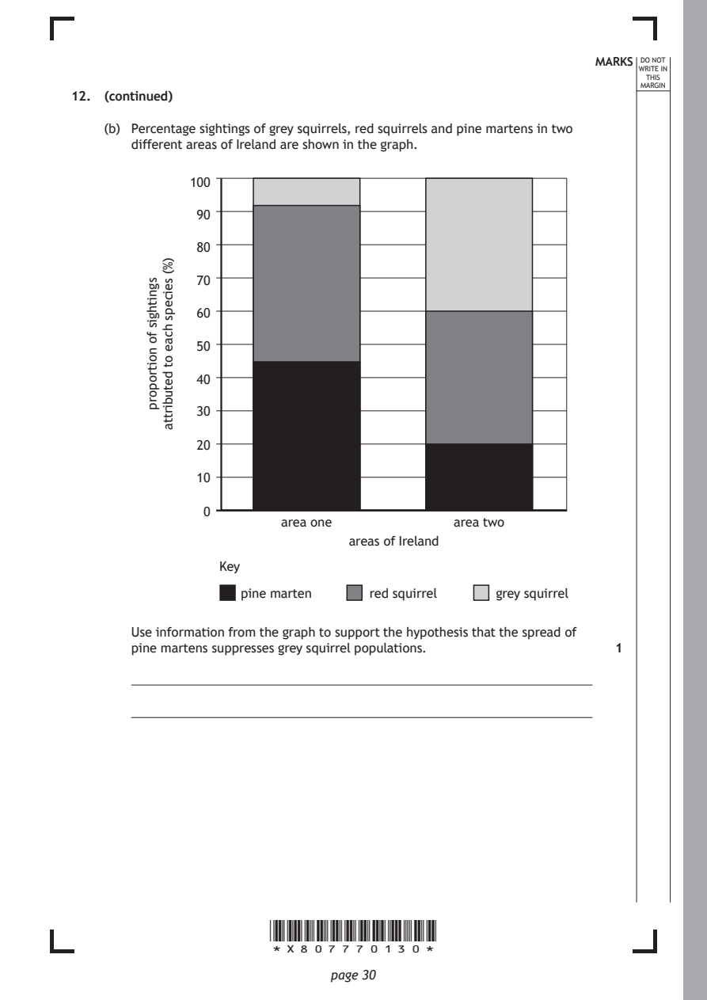
Selectable page text
MARKS _{W}^{D}_{R}^{O}_{I} _{T}^{N}OT
E IN
THIS
MARGIN
12. (continued)
(b) Percentage sightings of grey squirrels, red squirrels and pine martens in two
different areas of Ireland are shown in the graph.
area one area two
areas of Ireland
pine marten red squirrel grey squirrel
*X807770130*
page 30
sgnithgis
fo
noitroporp
)%(
seiceps
hcae
ot
detubirtta
100
90
80
70
60
50
40
30
20
10
0
Key
Use information from the graph to support the hypothesis that the spread of
pine martens suppresses grey squirrel populations. 1PDF page 31
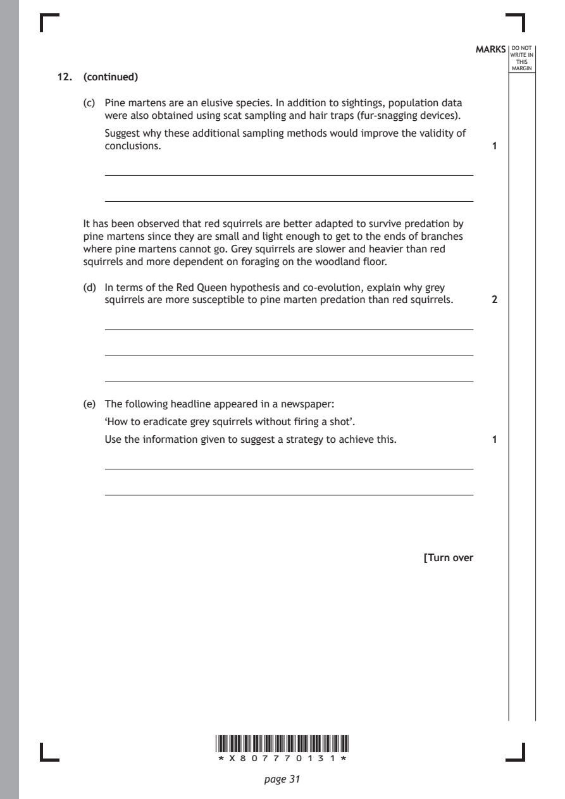
Selectable page text
MARKS _{W}^{D}_{R}^{O}_{I} _{T}^{N}OT
E IN
THIS
MARGIN
12. (continued)
(c) Pine martens are an elusive species. In addition to sightings, population data
were also obtained using scat sampling and hair traps (fur‑snagging devices).
Suggest why these additional sampling methods would improve the validity of
conclusions. 1
It has been observed that red squirrels are better adapted to survive predation by
pine martens since they are small and light enough to get to the ends of branches
where pine martens cannot go. Grey squirrels are slower and heavier than red
squirrels and more dependent on foraging on the woodland floor.
(d) In terms of the Red Queen hypothesis and co‑evolution, explain why grey
squirrels are more susceptible to pine marten predation than red squirrels. 2
(e) The following headline appeared in a newspaper:
‘How to eradicate grey squirrels without firing a shot’.
Use the information given to suggest a strategy to achieve this. 1
[Turn over
*X807770131*
page 31PDF page 32
Paper 2, Question 13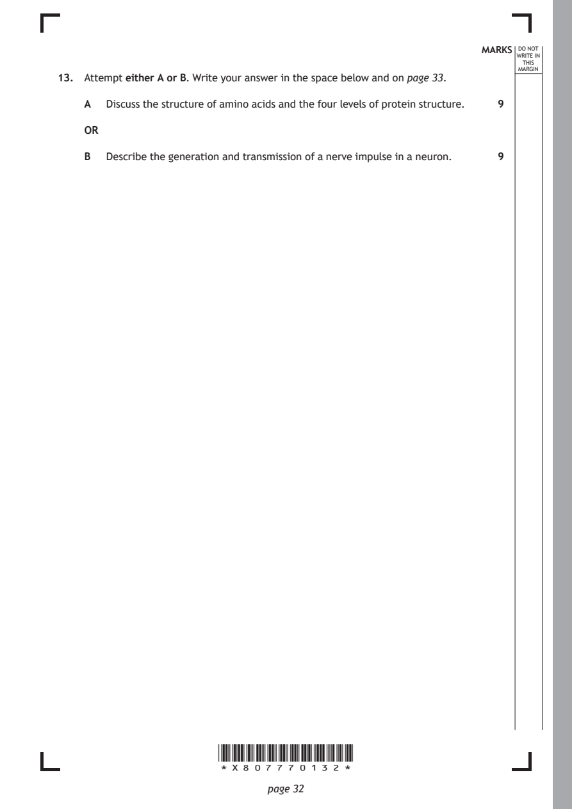
Selectable page text
MARKS _{W}^{D}_{R}^{O}_{I} _{T}^{N}OT
E IN
THIS
MARGIN
13. Attempt either A or B. Write your answer in the space below and on page 33.
A Discuss the structure of amino acids and the four levels of protein structure. 9
OR
B Describe the generation and transmission of a nerve impulse in a neuron. 9
*X807770132*
page 32PDF page 33
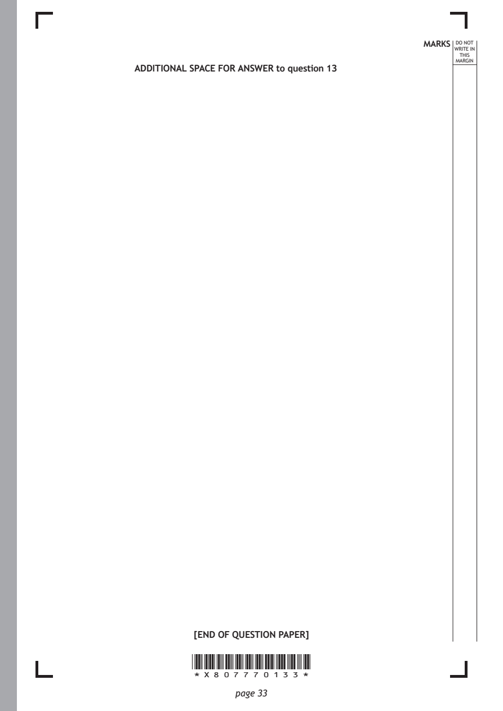
Selectable page text
MARKS _{W}^{D}_{R}^{O}_{I} _{T}^{N}OT
E IN
THIS
MARGIN
ADDITIONAL SPACE FOR ANSWER to question 13
[END OF QUESTION PAPER]
*X807770133*
page 33PDF page 34
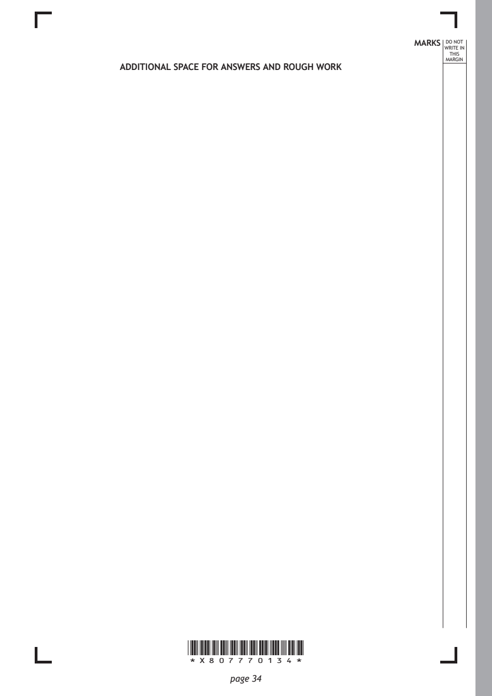
Selectable page text
MARKS _{W}^{D}_{R}^{O}_{I} _{T}^{N}OT
E IN
THIS
MARGIN
ADDITIONAL SPACE FOR ANSWERS AND ROUGH WORK
*X807770134*
page 34PDF page 35
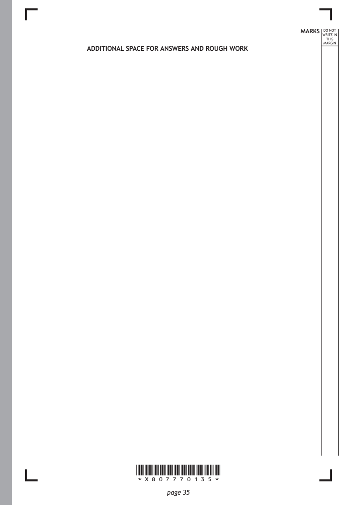
Selectable page text
MARKS _{W}^{D}_{R}^{O}_{I} _{T}^{N}OT
E IN
THIS
MARGIN
ADDITIONAL SPACE FOR ANSWERS AND ROUGH WORK
*X807770135*
page 35PDF page 36
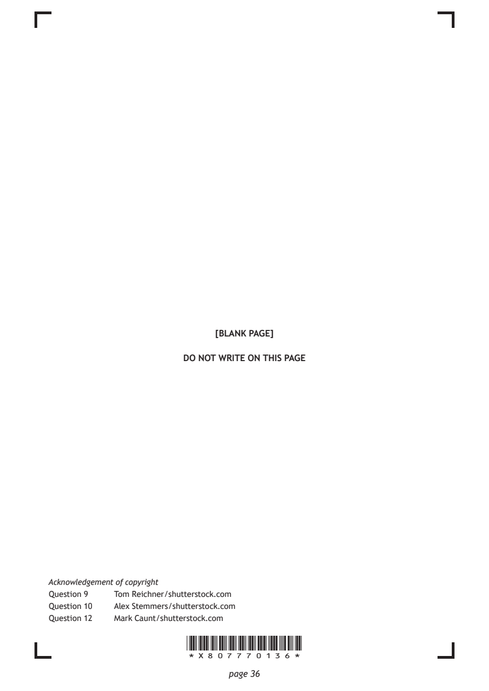
Selectable page text
[BLANK PAGE]
DO NOT WRITE ON THIS PAGE
Acknowledgement of copyright
Question 9 Tom Reichner/shutterstock.com
Question 10 Alex Stemmers/shutterstock.com
Question 12 Mark Caunt/shutterstock.com
*X807770136*
page 36